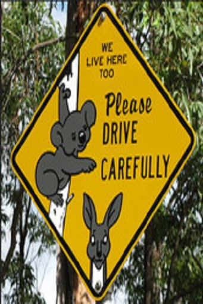

Koalaların Tarihçesi
Koalalar binlerce yıldır Avustralya Aborjinleri tarafından avlandı, mitolojilerinde ve mağara resimlerinde tasvir edildi. Avrupalıların koalalarla bilinen ilk karşılaşmaları 1798'de gerçekleşti ve hayvanın bir resmi George Perry tarafından 1811'de yayımlandı. Robert Brown türün ilk detaylı bilimsel tanımlamasını 1814 yılında yapmışsa da bu çalışma 180 yıl boyunca yayımlanmadı. John Gould, koalayı hem tanımladı hem de resmini çizerek Birleşik Krallık'ta tanınmasını sağladı. Koalaların biyolojisi hakkındaki diğer ayrıntılar ise 19. yüzyılda çeşitli Britanyalı bilim insanları tarafından tespit edildi. 20. yüzyılın başlarında kürkleri için sıkça avlanmaları ve Queensland'da yaygın olarak itlaf edilmeleri kamuoyunda tepki oluşturdu ve türün korunması için eylem grupları ortaya çıktı.Bu kapsamda hayvan barınakları kuruldu, yaşam alanları parçalanmış ve azalmış olan koalalar yeni bölgelere nakledildi. Tarım, kentleşme, kuraklık ve bazıları iklim değişikliğine bağlı olarak gerçekleşen orman yangınları nedeniyle yaşam alanlarının yok olması tehdidiyle karşı karşıyadırlar. Koalalar Dünya Doğa ve Doğal Kaynakları Koruma Birliği tarafından IUCN Kırmızı Listesi'nde hassas türler arasında listelenmektedir.
Koalaların İnsanlarla Etkileşimi.
Koala hakkındaki yazılı ilk ifadeler, Yeni Güney Galler Valisi John Hunter'ın hizmetkârı John Price'a aittir.[118] Price, "cullawine" adı verilen hayvanla 26 Ocak 1798'de Yeni Güney Galler'de bulunan Mavi Dağlar'a yapılan keşif seferi sırasında karşılaşmış;[119] ancak yazdıkları yaklaşık yüz yıl sonra Historical Records of Australia adlı eserde yayımlanmıştı.[120] 1802 yılında kâşif Francis Barrallier, iki Aborjin rehberin av dönüşü yemek amacıyla getirdikleri iki koala ayağını görmesiyle hayvanla ilk karşılaşmasını yaşadı. Barrallier, bu ayakları koruyarak notlarıyla birlikte Hunter'ın halefi Philip Gidley King'e gönderdi, o da bunları sonrasında Joseph Banks'e iletti. Barrallier'nin notları 1897 yılına kadar yayımlanmadı.
- Sydney Gazette'in 21 Ağustos 1803 tarihli sayısında, ilk defa canlı yakalanan bir "koolah"a dair haber yayımlandı.[122] Birkaç hafta içerisinde Matthew Flinders'ın astronomu James Inman, bir çift koala alarak bunları gemiyle, Birleşik Krallık'ta bulunan Joseph Banks'e göndermek istemişti ancak Kral III. George, hayvanın suluboya resmini yapmak üzere Eylül 1803'te John Lewin'i görevlendirerek kendisini Yeni Güney Galler'e gönderdi.
Muhtemelen William Paterson'a ait olduğu düşünülen[123] Sydney Gazette yazısında hayvanlar " bir waumbuttan (vombat) biraz daha büyük" olarak tanımlanmışlardı.[124] Yeni Güney Galler'e vardıktan sonra Lewin'in yaptığı üç resimden birisi, Georges Cuvier'nin 1817'de yayımlanan Le règne animal adlı eserinde, ilerleyen yıllarda da Lorenz Oken'in 1843 tarihli Allgemeine Naturgeschichte adlı eseri gibi Avrupa'da yayımlanan çeşitli doğa tarihi kitaplarında kullanıldı. Koalanın ilk ayrıntılı bilimsel tanımlaması 1803'te, Yeni Güney Galler'in Illawarra bölgesindeki Kembla Dağı'nda yakalanan dişi bir koaladan yararlanarak Robert Brown tarafından yapıldı. 1811'de Ferdinand Bauer, hayvanın kafatasını, boğazını, ayaklarını ve pençelerini çizdi. Brown'ın eserleri yayımlanmadı ve ölümüne kadar kendisinde kaldı.
Ölümünün ardından da vasiyeti gereğince bu eserler Londra'daki Doğa Tarihi Müzesi'ne bağışlandı. Brown'ın eserleri 1994'e kadar tespit edilememişken Bauer'in çalışmaları ise 1989'a kadar yayımlanmamıştı.[126] Everard Home, Brown ve Bauer'e Yeni Güney Galler'de eşlik eden William Paterson'ın tanıklığına dayanarak koala hakkında ayrıntılı bilgiler verdi.[127] Notlarını 1808'de Philosophical Transactions of the Royal Society'de yayımlayan Home,[128] hayvana Didelphis coola bilimsel adını adını verdi.[129]
Koalanın ilk basılmış tasviri, George Perry'nin 1811'de basılan tarihli eseri Arcana'da yer alan 1810 tarihli çizimdir.[130] Orta ve Güney Amerika'da, ağaçlarda yaşayan üç parmaklı tembel hayvanlar (Bradypus) cinsi memelilere benzerlikleri nedeniyle "Yeni Hollanda tembel hayvanı" adını verdiği hayvan için şu ifadeleri kullanmıştı:
"... tembel hayvandaki gibi gözler, ağza ve burna çok yakındır ve bu da hayvana hantal ve biçimsiz bir görünüm vermekte, zarafetten yoksun kılmaktadır ... ne karakterlerinde ne de dış görünüşlerinde doğa tarihçisini ya da filozofları ilgilendirecek bir nokta yoktur. Ancak doğa hiçbir şeyi boşa sunmadığı için bu uyuşuk, anlamsız hayvanların bile yaşayanların oluşturduğu büyük zincirin halkalarından biri olduğunu varsayabiliriz ...".
- John Gould'un 1946-1863 yılları arasında yayımlanan üç ciltlik The Mammals of Australia eserinde tanımladığı ve çizimleriyle tasvir ettiği koala, Avustralya'nın diğer hayvanlarıyla birlikte Britanya halkı arasında tanınmaya başladı.[133] Richard Owen, Avustralya memelilerinin fizyolojisini ve anatomisini anlatan bir dizi yayın içerisinde koalanın anatomisi ile ilgili bir tebliği 1836'da Londra Zooloji Topluluğuna sundu.
- Bu tebliğde Owen, koalanın iç anatomisinin ilk ayrıntılı tanımlamasını yapmış ve vombatlar ile olan genel yapısal benzerliklerini göstermişti.[135] Londra Zooloji Topluluğu küratörü George Robert Waterhouse, 1840'larda koalayı doğru bir şekilde keseli memeli olarak sınıflandırdı ve yeni keşfedilmiş olan Diprotodon ve Nototherium gibi fosil kalıntılarının koala ile olan benzerliklerini ortaya çıkardı.[136] Avustralya Müzesi küratörü Gerard Krefft de 1871 tarihli The Mammals of Australia adlı eserinde koala ile atalarının arasındaki evrimsel mekanizmaları açıkladı.
- Londra Zooloji Topluluğu tarafından satın alınan ve 1881'de Birleşik Krallık'a gelen koala, buraya ulaşan ilk canlı koalaydı. Topluluk üyelerinden William Alexander Forbes'un anlattığına göre, o zamanlar kullanılan ayaklı lavaboların kapağı kaza sonucu hayvanın üzerine düşmüş ve hayvan ölmüştü. Forbes, bunu bir fırsat olarak değerlendirerek dişi koalayı diseke ederek dişi üreme sistemi, beyin ile karaciğer hakkında anatomik ayrıntıları açıkladı. Owen, daha önce yalnızca korunmuş örneklerde çalışabildiğinden bu ayrıntıları tespit edememişti. 1884'te koalanın rahim içi gelişmesini tanımlayan William Caldwell, bu bilgiler ışığında koalalar ile tek deliklileri aynı evrimsel zaman dönemine yerleştirdi.

Korunma Durumu
2008 yılında, Dünya Doğa ve Doğal Kaynakları Koruma Birliği (IUCN) geniş yaşam alanı, tahmin edilen yüksek popülasyonu ve popülasyon azalma oranının tehdit altında türler listesine girecek kadar yüksek olmaması nedeniyle koalayı IUCN Kırmızı Listesi'nde asgari endişe altındaki türler arasında listeledi. 2009'da, koalanın 1999 Çevre Koruması ve Biyoçeşitliliğin Korunması Yasası'na dahil edilmesi yönündeki teklif reddedildi. 2012'da Avustralya hükûmeti, Queensland ve Yeni Güney Galler'de bulunan koala popülasyonlarını, sırasıyla %40 ve %33 popülasyon azalma oranları nedeniyle hassas türler arasında listeledi. Victoria ve Güney Avustralya'da bulunan popülasyonların ise görece yüksek olduğu ifade edilse de; Avustralya Koala Vakfı, Victoria popülasyonunun gerçekte 100.000'den düşük olsa da 200.000 kadar olduğunun sanılması sebebiyle bu popülasyonun korunma tedbirleri altına alınmadığını belirtmektedir. 2016'da IUCN Kırmızı Listesi'ndeki durumu güncellenerek hassas türler arasına alındı. 2017 tarihli Dünya Doğayı Koruma Vakfı raporu, Queensland'deki popülasyonun nesil başına %53, Yeni Güney Galler'deki popülasyonun ise nesil başına %26 azaldığını belirtmektedir.
Koalaların karşılaştığı en büyük beşeri tehditler, yaşam alanlarının yok olması ve parçalanmasıdır. Sahil kesimlerde bunun ana nedeni kentleşme iken, iç bölgelerde ise tarım alanı yaratma amacıyla arazilerin ormansızlaştırılmasıdır. Ağaç ürünleri için kullanılmak üzere ağaçların kesilmesi de koalaların yaşam alanlarının yok edilmesine neden olur.[176] 2015-2016 yıllarında Avustralya'nın bitki örtüsünde yaklaşık 395.000 hektarlık alan yok edildi ve bu sayı, önceki yıldan yaklaşık %33 daha fazlaydı. 2030'a kadar yaklaşık 3 milyon hektarlık balta girmemiş ormanın yok edileceği öngörülmektedir.
- Avrupalı göçmenlerin kıtaya gelmesinden beri, özellikle Queensland'de yaşam alanı parçalanması nedeniyle koalanın doğal dağılım alanı %50 kadar küçülme göstermiştir.
- Queensland ve Yeni Güney Galler'de koalanın "hassas türler" arasında yer alması gayrimenkul yatırımcılarının projelerinde koalalar üzerinde yaratılacak etkiyi de değerlendirmelerini gerektirmektedir.
- Ayrıca koalalar koruma altında alınmış bölgelerde de yaşamaktadırlar.